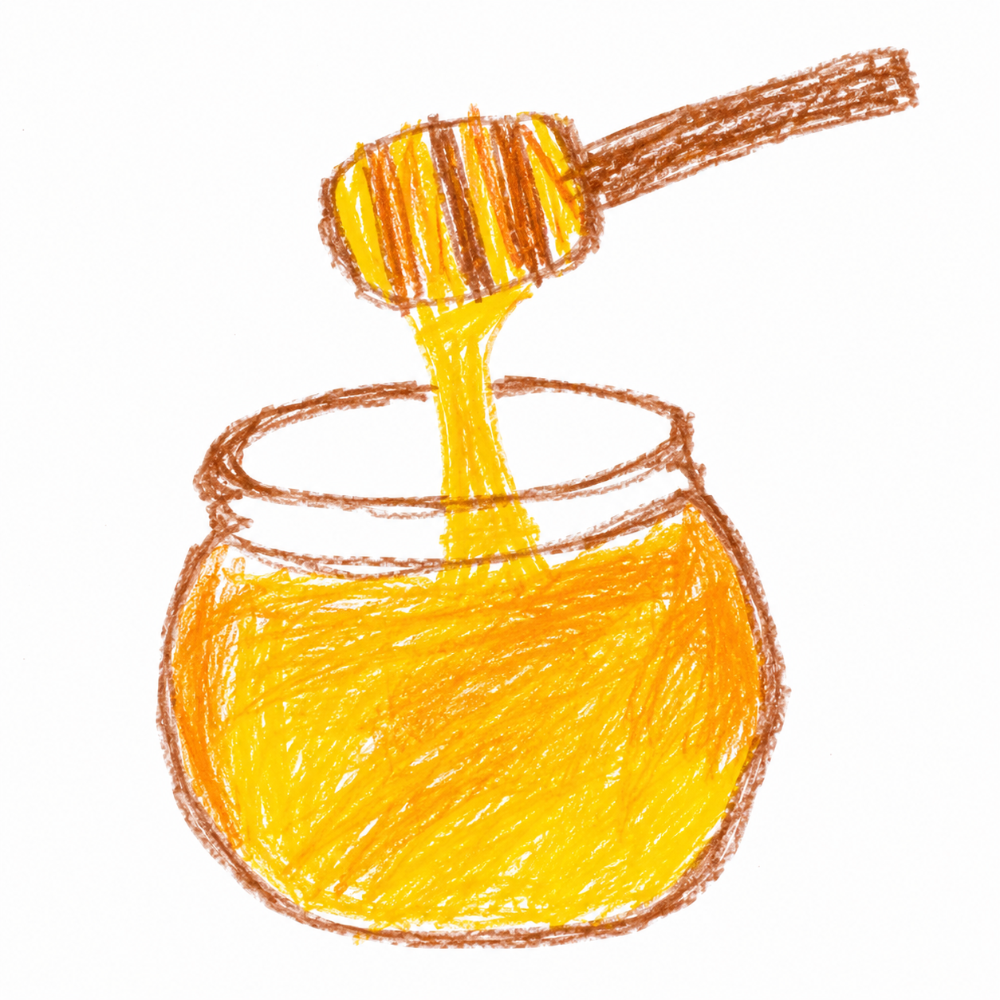

Steg 1 – Finn frem ingrediensene
Halv liter vikingfjord, 250 g honning, Én kanelstang, 10 nellikspiker, Én appelsin, 1 ts kardemomme, 2 ts vaniljesukker.

Halv liter vikingfjord, 250 g honning, Én kanelstang, 10 nellikspiker, Én appelsin, 1 ts kardemomme, 2 ts vaniljesukker.

Vask appelsinen godt. Skrell av kun det oransje skallet (det hvite gjør smaken bitter). Legg følgende i glasset: appelsinskall, kanelstang, nellik, kardemomme.

Hell over 5 dl vodka. Lukk glasset og sett det mørkt (skap/skuff). La det stå: Minimum: 2 uker Anbefalt: 4–6 uker Rist glasset forsiktig et par ganger i uka.

Etter trekkingen: Sil bort krydder og appelsinskall. Varm honningen forsiktig i litt varmt vannbad så den blir flytende. Bland den inn i spriten. Ikke kok honningen – da mister du litt av aromaen. Smak til: Mer honning = søtere og rundere Mindre honning = mer "brennevinfølelse"

Dette er steget som gjør at den går fra "hjemmelaget" til "ordentlig". La flasken stå: Minimum: 2 uker Perfekt: 2–3 måneder.